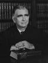

FORMER JUDGES
Judge Donald Hunter
Donald Hunter, a native of Anderson, graduated in 1937 from the Lincoln Law School in Indianapolis
From 1937 until 1948. He would in private practice in La Grange. He was elected to represent
Madison County in the Indiana House of Representatives in 1942. From 1943 to 1946. He served in
The Army infantry in World War II in Europe. He was awarded a Bronze Star for bravery and a Purple
Heart. In 1944, he was furloughed to return home for a special legislative session.
After the war, Judge Hunter served on the LaGrange Circuit Court from 1948 until 1962. He was
Elected to the Indiana Appellate Court in 1962. Serving from 1963 until 1966. He was Chief Judge in
the May 1964 term.
In 1966 he was elected to the Indiana Supreme Court where he served from 1967 to 1985,
Justice Hunter served on the Indiana Constitutional Revision Commission. He was a member of the
Madison and Lagrange County for associations, the Indiana Trial Lawyers Association, and the First
United Methodist Church in Anderson. Governor Otis Bowen named him a Sagamore of the Wabash.
He died on October 27, 1991 at the age of 80. He was survived by his wife Violet, daughter Jean,
and son Samuel.
From 1937 until 1948. He would in private practice in La Grange. He was elected to represent
Madison County in the Indiana House of Representatives in 1942. From 1943 to 1946. He served in
The Army infantry in World War II in Europe. He was awarded a Bronze Star for bravery and a Purple
Heart. In 1944, he was furloughed to return home for a special legislative session.
After the war, Judge Hunter served on the LaGrange Circuit Court from 1948 until 1962. He was
Elected to the Indiana Appellate Court in 1962. Serving from 1963 until 1966. He was Chief Judge in
the May 1964 term.
In 1966 he was elected to the Indiana Supreme Court where he served from 1967 to 1985,
Justice Hunter served on the Indiana Constitutional Revision Commission. He was a member of the
Madison and Lagrange County for associations, the Indiana Trial Lawyers Association, and the First
United Methodist Church in Anderson. Governor Otis Bowen named him a Sagamore of the Wabash.
He died on October 27, 1991 at the age of 80. He was survived by his wife Violet, daughter Jean,
and son Samuel.
